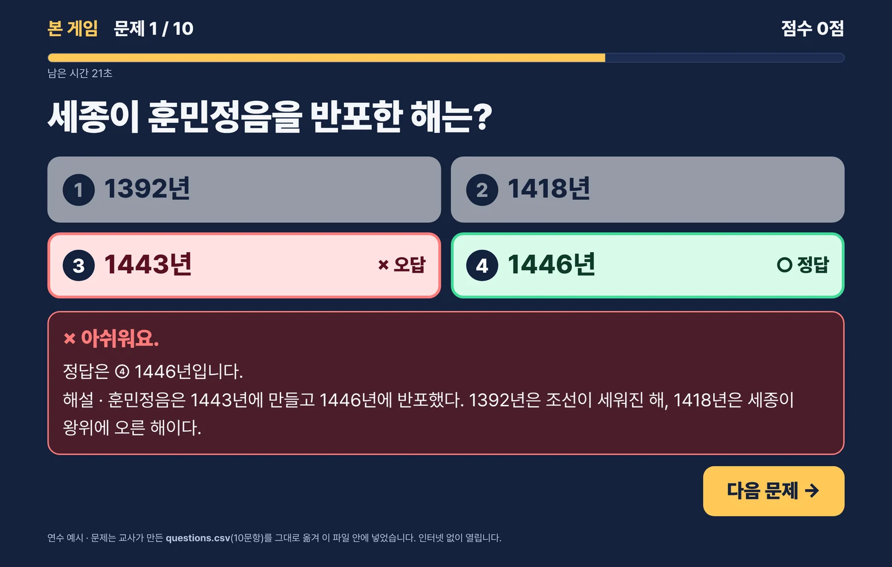
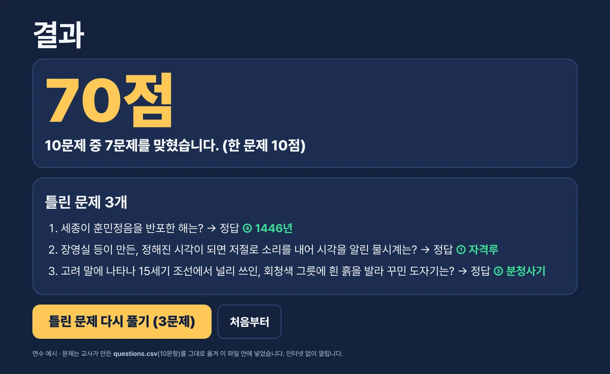

복습 퀴즈 게임 만들기
교사가 만든 문제 파일을 읽어, 교실 TV에서 함께 푸는 4지선다 복습 게임을 한 파일짜리 웹페이지로 만듭니다.
- 목표
- questions.csv 의 10문항으로 문제 순서 섞기·시간 제한·점수·해설·틀린 문제 다시 풀기가 되는 복습 게임을 만든다 (예시: 중학교 역사 — 조선 전기의 문화)
- 준비물
클로드연수안에 만든 빈7차시폴더, 예시 문제 파일 questions.csv- 결과물
index.html한 파일 — 문제가 파일 안에 들어 있어 인터넷 없이 열림- 주의
- 문제·정답·해설의 정확성은 교사가 책임 · 클로드가 문제를 고치거나 더하지 않게
클로드에게 문제까지 만들게 하면 편하지만, 틀린 사실이 섞여도 게임 화면에서는 그럴듯해 보입니다. 그래서 이 차시의 핵심은 문제는 교사가 만든 파일로 주고, 클로드는 게임만 만들게 하는 것입니다. 문제 파일은 엑셀에서 저장할 수 있는 CSV를 씁니다. 다 만든 게임은 교사가 직접 풀어 보며 검수합니다.
먼저 볼 영상

1 준비
클로드연수안에 빈 폴더7차시를 만듭니다.- 예시 문제 파일 questions.csv 를 받아
7차시폴더에 넣습니다. 엑셀로 열면 번호 · 문제 · 보기1~4 · 정답 · 해설 열이 보입니다. 정답 열에는 보기 번호(1~4)가 있습니다. - 내 문제로 하려면 같은 열로 엑셀 표를 만들고 다른 이름으로 저장에서 파일 형식을 CSV UTF-8(쉼표로 분리) 로 고릅니다. 다른 CSV 형식으로 저장하면 한글이 깨질 수 있습니다.
- 문제 파일의 사실과 정답은 교사가 먼저 확인합니다. 게임은 파일 내용을 그대로 보여 줍니다.
2 따라 하기
번호 순서대로 진행합니다. 프롬프트가 필요한 단계에는 바로 아래에 복사 단추가 있습니다.
- Code 탭에서 환경 Local, 폴더 Open folder… 로
클로드연수/7차시를 고릅니다(5차시 2~3번과 같습니다). - 권한 모드를 Plan 으로 바꿉니다. Plan 모드에서는 파일을 고치지 않고 계획만 나옵니다.
- 계획을 받습니다. 아래 프롬프트를 보내고 계획을 읽습니다.
중학교 역사 '조선 전기의 문화' 복습 퀴즈 게임을 만들려고 합니다. 먼저 계획만 세워 주세요. 문제 - 이 폴더의 questions.csv (교사가 만든 10문항: 번호, 문제, 보기1~4, 정답, 해설) - 문제·보기·정답·해설은 파일 그대로 쓰고, 고치거나 새로 지어내지 않기 - 파일에서 이상한 점(빈칸, 정답 번호 오류 등)을 찾으면 고치지 말고 알려 주기 요구 사항 - index.html 한 파일. 문제를 HTML 안에 넣어 외부 라이브러리·글꼴·인터넷 없이 열려야 함 - 시작 화면: 시간 제한 고르기(없음 · 20초 · 30초), 시작 단추 - 4지선다, 문제 순서는 매번 섞기 - 답을 고르면 바로 정답·오답과 해설 표시, 시간이 다 되면 오답으로 처리하고 정답 보여 주기 - 점수(한 문제 10점)와 진행 상황(예: 3 / 10) 표시 - 결과 화면: 점수, 틀린 문제 목록, «틀린 문제 다시 풀기» 단추, «처음부터» 단추 - 교실 TV에서 뒷자리까지 읽히는 큰 글자, 휴대폰에서도 풀 수 있게 - 키보드 1~4로 답을 고르고 Enter로 다음 문제 - 색만으로 정답·오답을 구분하지 말고 글자(○ 정답, × 오답)도 함께 계획에는 화면 구성, questions.csv 를 게임에 넣는 방법, 점수와 시간 제한을 처리하는 방법, 다 만든 뒤 확인할 방법을 적어 주세요.
«파일 그대로, 고치거나 지어내지 않기»와 «이상한 점은 고치지 말고 알려 주기»가 핵심입니다. 클로드가 정답이 틀렸다고 판단해 말없이 바꾸면, 교사가 모르는 사이 게임이 문제 파일과 달라집니다. «문제를 HTML 안에 넣어»는 CSV 파일 없이 index.html 하나만 옮겨도 게임이 돌게 합니다. «색만으로 구분하지 말고»는 색을 구별하기 어려운 학생과 뒷자리 학생을 위한 것입니다.
캡처 넣을 곳 · L07-1
Plan 모드의 계획 (따라 하기 3번).- 계획 전체가 보이게
- 빨간 상자: questions.csv 를 HTML 안에 넣는 방법을 적은 부분
- 계획을 읽고 고칠 점은 말로 고칩니다. 예: «시간 제한에 10초도 넣어 주세요», «보기 순서도 섞어 주세요»
- 권한 모드를 Manual 로 바꾸고 아래 프롬프트로 만들기를 맡깁니다. 바뀔 내용과 승인 단추가 나오면 내용을 보고 승인합니다.
계획대로 만들어 주세요. 다 만들면 앱 안 브라우저 창에서 열어 확인하고, 아래를 표로 알려 주세요. 1. 게임 안 문항 수가 questions.csv 와 같은지 2. 문항마다 정답 판정이 파일의 정답 번호와 같은지 3. 시간이 다 되면 오답으로 처리되는지
- 대화창의
index.html경로를 눌러 앱 안 브라우저 창에서 열고 직접 풀어 봅니다. 시간 제한 20초를 고르고, 일부러 두세 문제를 틀리고, 한 문제는 시간이 다 될 때까지 기다립니다. 결과 화면에서 틀린 문제 다시 풀기도 눌러 봅니다.캡처 넣을 곳 · L07-2
앱 안 브라우저 창의 게임 화면 (따라 하기 6번).- 빨간 상자: 대화창의
index.html경로와 브라우저 창 - 답을 고른 뒤 ○ 정답 · × 오답 표시와 해설이 보이게
- 빨간 상자: 대화창의
- 아래 프롬프트로 문제 파일과 대조하게 하고, 고칠 점은 하나씩 요청합니다.
게임 안 문제를 questions.csv 와 한 문항씩 대조해 주세요. 1. 문제·보기·정답·해설 글자가 파일과 똑같은지 (번호 | 문제 앞부분 | 같음·다름) 2. 문제 순서를 섞어도 문제와 보기·정답·해설의 짝이 맞는지 3. «틀린 문제 다시 풀기»에 틀린 문제만 나오는지 게임 쪽이 파일과 다르면 파일에 맞게 고치고, 고친 내용을 한 줄씩 알려 주세요. 파일 자체에서 이상해 보이는 점은 고치지 말고 따로 알려 주세요.
캡처 넣을 곳 · L07-3
대조 결과 (따라 하기 7번).- 대조 표 전체가 보이게
- 빨간 상자: «같음·다름» 열
- 교실에서는 파일 탐색기에서
7차시/index.html을 더블클릭해 크롬·엣지로 열고, F11 로 전체 화면을 만들어 TV에 띄웁니다. 학생이 손을 들거나 모둠 판에 답을 써서 함께 풉니다. 8차시에서 인터넷에 올리면 학생이 휴대폰으로도 풉니다.
3 결과 예시


예시 게임 직접 해 보기 → · 문제 파일 questions.csv 받기
4 검증 포인트
② 정답 판정 — 정답을 골랐을 때 ○, 다른 보기를 골랐을 때 × 가 나오는지 몇 문제는 직접 해 봅니다.
③ 섞기 — 처음부터 다시 하면 문제 순서가 바뀌는지, 섞여도 문제와 보기·해설의 짝이 맞는지 봅니다.
④ 시간 제한 — 시간이 다 되면 오답으로 처리되고, 다음 문제에서 시간이 다시 시작되는지 봅니다.
⑤ 다시 풀기 — 틀린 문제만 다시 나오는지, 다 맞히면 끝나는지 봅니다.
⑥ 점수 — 10문제 중 7문제를 맞히면 70점인지 계산해 봅니다.
⑦ 교실 화면 — 교실 TV에 띄워 뒷자리에서 문제와 보기가 읽히는지 봅니다.
⑧ 인터넷 없이 — 와이파이를 끄거나 index.html 만 USB로 옮겨 열어 봅니다.
⑨ 문제 파일 자체 — 게임이 파일과 같아도 파일이 틀리면 소용없습니다. 문제 파일은 교과서·지도서와 대조해 교사가 확인합니다.
5 다른 교과에 적용하기
따라 하기 3단계 프롬프트 1 대신 아래 교과 프롬프트를 씁니다. 교과마다 «다 만든 뒤 확인할 것»을 넣어 두었으니, 5단계와 7단계는 아래 공통 프롬프트로 바꿔 씁니다. 프롬프트에 적힌 이름(예: 맞춤법.csv)으로 교사가 만든 문제 파일을 폴더에 함께 넣습니다. 클로드에게 문제를 만들게 하지 않습니다.
계획대로 만들어 주세요. 다 만들면 앱 안 브라우저 창에서 열어 확인하고, 계획의 «다 만든 뒤 확인할 것»을 하나씩 점검한 결과를 표로 알려 주세요.
게임 안 문제를 문제 파일과 한 문항씩 대조해 주세요. 1. 문제와 정답이 파일과 똑같은지 (번호 | 문제 앞부분 | 같음·다름) 2. 계획의 «다 만든 뒤 확인할 것»을 다시 하나씩 점검 3. 학생이 오해할 만한 화면이나 표시가 있는지 게임 쪽이 파일과 다르면 파일에 맞게 고치고, 고친 내용을 한 줄씩 알려 주세요. 파일 자체에서 이상해 보이는 점은 고치지 말고 따로 알려 주세요.
국어맞춤법 OX 퀴즈문장을 보고 O·X, 틀리면 바른 표기와 설명
중학교 국어 '맞춤법 OX 퀴즈' 복습 게임을 만들려고 합니다. 먼저 계획만 세워 주세요. 문제 - 이 폴더의 맞춤법.csv (문장, O 또는 X, 바른 표기, 설명) - 문제와 정답은 파일 그대로 쓰고, 고치거나 새로 지어내지 않기 - 파일에서 이상한 점을 찾으면 고치지 말고 알려 주기 요구 사항 - index.html 한 파일. 문제를 HTML 안에 넣어 외부 라이브러리·글꼴·인터넷 없이 열려야 함 - 문장을 하나씩 크게 보여 주고 O · X 큰 단추로 고르기 - 틀리면 바른 표기와 설명 보여 주기 - 연속으로 맞힌 개수 표시, 틀린 문장만 다시 풀기 - 교실 TV에서 뒷자리까지 읽히는 큰 글자, 휴대폰에서도 할 수 있게 - 키보드로도 할 수 있게, 색만으로 정답·오답을 구분하지 않기 다 만든 뒤 확인할 것 - X 문장에서 보여 주는 바른 표기가 파일과 같은지 - 문장 순서를 섞어도 O·X 정답이 짝과 맞는지 계획에는 화면 구성, 문제 파일을 게임에 넣는 방법, 점수 계산 방법, 위의 확인 방법을 적어 주세요.
수학일차방정식 빨리 풀기답 입력칸, 시간 제한, 틀리면 풀이
중학교 수학 '일차방정식 빨리 풀기' 복습 게임을 만들려고 합니다. 먼저 계획만 세워 주세요. 문제 - 이 폴더의 방정식.csv (방정식, 해, 풀이) - 문제와 정답은 파일 그대로 쓰고, 고치거나 새로 지어내지 않기 - 파일에서 이상한 점을 찾으면 고치지 말고 알려 주기 요구 사항 - index.html 한 파일. 문제를 HTML 안에 넣어 외부 라이브러리·글꼴·인터넷 없이 열려야 함 - 방정식을 보여 주고 답을 입력칸에 쓰게 하기 (정수와 분수 답) - 시간 제한 고르기 (없음 · 60초 동안 몇 문제) - 틀리면 파일의 풀이 보여 주기 - 교실 TV에서 뒷자리까지 읽히는 큰 글자, 휴대폰에서도 할 수 있게 - 키보드로도 할 수 있게, 색만으로 정답·오답을 구분하지 않기 다 만든 뒤 확인할 것 - 파일의 해를 방정식에 대입해 성립하는지 계산해서 알려 주기 (틀린 해는 고치지 말고 알리기) - 3/2 와 1.5 처럼 같은 값을 정답으로 볼지 계획에 적기 계획에는 화면 구성, 문제 파일을 게임에 넣는 방법, 입력한 답을 채점하는 방법, 위의 확인 방법을 적어 주세요.
영어단어 카드 짝 맞추기카드를 뒤집어 단어와 뜻 짝 찾기
중학교 영어 '단어 카드 짝 맞추기' 복습 게임을 만들려고 합니다. 먼저 계획만 세워 주세요. 문제 - 이 폴더의 단어.csv (영어 단어, 뜻) - 문제와 정답은 파일 그대로 쓰고, 고치거나 새로 지어내지 않기 - 파일에서 이상한 점을 찾으면 고치지 말고 알려 주기 요구 사항 - index.html 한 파일. 문제를 HTML 안에 넣어 외부 라이브러리·글꼴·인터넷 없이 열려야 함 - 카드 16장(8쌍)을 뒤집어 단어와 뜻의 짝 찾기 - 뒤집은 횟수와 걸린 시간 표시 - 다시 하기를 누르면 파일에서 다른 단어 8개로 - 교실 TV에서 뒷자리까지 읽히는 큰 글자, 휴대폰에서도 할 수 있게 - 키보드로도 할 수 있게, 색만으로 정답·오답을 구분하지 않기 다 만든 뒤 확인할 것 - 짝이 맞으면 두 카드가 열린 채 남는지 - 단어와 뜻이 파일과 같게 짝지어지는지 계획에는 화면 구성, 문제 파일을 게임에 넣는 방법, 짝을 판정하는 방법, 위의 확인 방법을 적어 주세요.
과학원소 기호 맞히기이름을 보고 기호 고르기, 반대 방향도
중학교 과학 '원소 기호 맞히기' 복습 게임을 만들려고 합니다. 먼저 계획만 세워 주세요. 문제 - 이 폴더의 원소.csv (원소 이름, 원소 기호) - 문제와 정답은 파일 그대로 쓰고, 고치거나 새로 지어내지 않기 - 파일에서 이상한 점을 찾으면 고치지 말고 알려 주기 요구 사항 - index.html 한 파일. 문제를 HTML 안에 넣어 외부 라이브러리·글꼴·인터넷 없이 열려야 함 - 원소 이름을 보고 원소 기호 4지선다, «기호 보고 이름 고르기» 모드도 - 오답 보기는 파일의 다른 원소에서 고르기 - 시간 제한 고르기 (없음 · 10초 · 20초) - 교실 TV에서 뒷자리까지 읽히는 큰 글자, 휴대폰에서도 할 수 있게 - 키보드로도 할 수 있게, 색만으로 정답·오답을 구분하지 않기 다 만든 뒤 확인할 것 - 한 문제의 보기 4개가 서로 겹치지 않는지 - Na, Cl 처럼 대소문자가 파일과 같게 보이는지 계획에는 화면 구성, 문제 파일을 게임에 넣는 방법, 오답 보기를 고르는 방법, 위의 확인 방법을 적어 주세요.
사회기후 지역 맞히기기후 설명을 읽고 지역 고르기, 힌트 1번
중학교 사회 '기후 지역 맞히기' 복습 게임을 만들려고 합니다. 먼저 계획만 세워 주세요. 문제 - 이 폴더의 기후.csv (설명, 기후 지역, 해설) - 문제와 정답은 파일 그대로 쓰고, 고치거나 새로 지어내지 않기 - 파일에서 이상한 점을 찾으면 고치지 말고 알려 주기 요구 사항 - index.html 한 파일. 문제를 HTML 안에 넣어 외부 라이브러리·글꼴·인터넷 없이 열려야 함 - 설명을 읽고 기후 지역 4지선다 - 문제마다 힌트 단추 1번 (쓰면 그 문제 점수 절반) - 정답·오답과 해설 표시, 결과 화면에 틀린 문제 목록 - 교실 TV에서 뒷자리까지 읽히는 큰 글자, 휴대폰에서도 할 수 있게 - 키보드로도 할 수 있게, 색만으로 정답·오답을 구분하지 않기 다 만든 뒤 확인할 것 - 힌트를 쓴 문제의 점수가 절반으로 계산되는지 - 해설이 파일과 같은지 계획에는 화면 구성, 문제 파일을 게임에 넣는 방법, 힌트와 점수 계산 방법, 위의 확인 방법을 적어 주세요.
역사연표 순서 맞추기사건 카드 4장을 오래된 순서로 놓기
중학교 역사 '연표 순서 맞추기' 복습 게임을 만들려고 합니다. 먼저 계획만 세워 주세요. 문제 - 이 폴더의 사건.csv (사건, 연도, 설명) - 문제와 정답은 파일 그대로 쓰고, 고치거나 새로 지어내지 않기 - 파일에서 이상한 점을 찾으면 고치지 말고 알려 주기 요구 사항 - index.html 한 파일. 문제를 HTML 안에 넣어 외부 라이브러리·글꼴·인터넷 없이 열려야 함 - 사건 카드 4장을 오래된 순서로 놓기 (단추로 위아래 옮기기) - 확인을 누르면 연도와 설명 공개 - 판마다 다른 사건 4개 - 교실 TV에서 뒷자리까지 읽히는 큰 글자, 휴대폰에서도 할 수 있게 - 키보드로도 할 수 있게, 색만으로 정답·오답을 구분하지 않기 다 만든 뒤 확인할 것 - 한 판에 같은 연도의 사건이 함께 나오지 않는지 - 정답 순서가 파일의 연도 순서와 같은지 계획에는 화면 구성, 문제 파일을 게임에 넣는 방법, 순서를 채점하는 방법, 위의 확인 방법을 적어 주세요.
도덕개념어 뜻 맞히기뜻을 읽고 개념어 고르기, 예시로 해설
중학교 도덕 '개념어 뜻 맞히기' 복습 게임을 만들려고 합니다. 먼저 계획만 세워 주세요. 문제 - 이 폴더의 개념어.csv (개념어, 뜻, 예시) - 문제와 정답은 파일 그대로 쓰고, 고치거나 새로 지어내지 않기 - 파일에서 이상한 점을 찾으면 고치지 말고 알려 주기 요구 사항 - index.html 한 파일. 문제를 HTML 안에 넣어 외부 라이브러리·글꼴·인터넷 없이 열려야 함 - 뜻을 읽고 개념어 4지선다 - 고르면 파일의 예시를 해설로 보여 주기 - 틀린 문제만 다시 풀기 - 교실 TV에서 뒷자리까지 읽히는 큰 글자, 휴대폰에서도 할 수 있게 - 키보드로도 할 수 있게, 색만으로 정답·오답을 구분하지 않기 다 만든 뒤 확인할 것 - 뜻과 개념어의 짝이 파일과 같은지 - 예시 글이 파일과 같은지 계획에는 화면 구성, 문제 파일을 게임에 넣는 방법, 점수 계산 방법, 위의 확인 방법을 적어 주세요.
기술·가정식품군 나누기식품 카드를 알맞은 식품군 바구니로
중학교 기술·가정 '식품군 나누기' 복습 게임을 만들려고 합니다. 먼저 계획만 세워 주세요. 문제 - 이 폴더의 식품.csv (식품, 식품군, 주요 영양소) - 문제와 정답은 파일 그대로 쓰고, 고치거나 새로 지어내지 않기 - 파일에서 이상한 점을 찾으면 고치지 말고 알려 주기 요구 사항 - index.html 한 파일. 문제를 HTML 안에 넣어 외부 라이브러리·글꼴·인터넷 없이 열려야 함 - 식품 카드를 식품군 바구니로 나누기 (끌어다 놓기와 단추 둘 다) - 놓으면 맞았는지와 주요 영양소 보여 주기 - 다 나누면 맞힌 개수와 틀린 식품 목록 - 교실 TV에서 뒷자리까지 읽히는 큰 글자, 휴대폰에서도 할 수 있게 - 키보드로도 할 수 있게, 색만으로 정답·오답을 구분하지 않기 다 만든 뒤 확인할 것 - 바구니 이름이 파일의 식품군 이름과 같은지 - 끌어다 놓지 않고 키보드로도 나눌 수 있는지 계획에는 화면 구성, 문제 파일을 게임에 넣는 방법, 판정 방법, 위의 확인 방법을 적어 주세요.
정보이진수 바꾸기십진수↔이진수 입력형 게임
중학교 정보 '이진수 바꾸기' 복습 게임을 만들려고 합니다. 먼저 계획만 세워 주세요. 문제 - 이 폴더의 이진수.csv (십진수, 이진수) - 문제와 정답은 파일 그대로 쓰고, 고치거나 새로 지어내지 않기 - 파일에서 이상한 점을 찾으면 고치지 말고 알려 주기 요구 사항 - index.html 한 파일. 문제를 HTML 안에 넣어 외부 라이브러리·글꼴·인터넷 없이 열려야 함 - 십진수를 보고 이진수 입력, «이진수 보고 십진수» 모드도 - 틀리면 자리값(8 · 4 · 2 · 1) 표로 풀이 보여 주기 - 시간 제한 고르기 - 교실 TV에서 뒷자리까지 읽히는 큰 글자, 휴대폰에서도 할 수 있게 - 키보드로도 할 수 있게, 색만으로 정답·오답을 구분하지 않기 다 만든 뒤 확인할 것 - 파일의 이진수가 십진수와 맞는지 계산해서 알려 주기 (틀린 줄은 고치지 말고 알리기) - 앞에 0을 붙인 답(0101)도 정답으로 볼지 계획에 적기 계획에는 화면 구성, 문제 파일을 게임에 넣는 방법, 입력한 답을 채점하는 방법, 위의 확인 방법을 적어 주세요.
음악음악 용어 맞히기빠르기·셈여림 용어를 보고 뜻 고르기
중학교 음악 '음악 용어 맞히기' 복습 게임을 만들려고 합니다. 먼저 계획만 세워 주세요. 문제 - 이 폴더의 용어.csv (묶음(빠르기·셈여림), 용어, 읽는 법, 뜻) - 문제와 정답은 파일 그대로 쓰고, 고치거나 새로 지어내지 않기 - 파일에서 이상한 점을 찾으면 고치지 말고 알려 주기 요구 사항 - index.html 한 파일. 문제를 HTML 안에 넣어 외부 라이브러리·글꼴·인터넷 없이 열려야 함 - 용어(예: Allegro)와 읽는 법을 보여 주고 뜻 4지선다 - 빠르기 · 셈여림 묶음 고르기 (파일의 묶음 열 기준) - 정답·오답과 뜻 다시 보여 주기 - 교실 TV에서 뒷자리까지 읽히는 큰 글자, 휴대폰에서도 할 수 있게 - 키보드로도 할 수 있게, 색만으로 정답·오답을 구분하지 않기 다 만든 뒤 확인할 것 - 용어의 철자가 파일과 같은지 - 묶음을 고르면 그 묶음 용어만 나오는지 계획에는 화면 구성, 문제 파일을 게임에 넣는 방법, 점수 계산 방법, 위의 확인 방법을 적어 주세요.
미술미술 용어 빈칸 채우기설명 속 빈칸에 들어갈 용어 고르기
중학교 미술 '미술 용어 빈칸 채우기' 복습 게임을 만들려고 합니다. 먼저 계획만 세워 주세요. 문제 - 이 폴더의 미술용어.csv (설명 문장(빈칸은 ___), 정답 용어, 해설) - 문제와 정답은 파일 그대로 쓰고, 고치거나 새로 지어내지 않기 - 파일에서 이상한 점을 찾으면 고치지 말고 알려 주기 요구 사항 - index.html 한 파일. 문제를 HTML 안에 넣어 외부 라이브러리·글꼴·인터넷 없이 열려야 함 - 빈칸이 있는 설명을 보여 주고 들어갈 용어 4지선다 - 오답 보기는 파일의 다른 용어에서 고르기 - 정답이면 빈칸에 용어를 채운 문장 보여 주기 - 교실 TV에서 뒷자리까지 읽히는 큰 글자, 휴대폰에서도 할 수 있게 - 키보드로도 할 수 있게, 색만으로 정답·오답을 구분하지 않기 다 만든 뒤 확인할 것 - 빈칸을 채운 문장이 자연스럽게 읽히는지 - 한 문제의 보기가 겹치지 않는지 계획에는 화면 구성, 문제 파일을 게임에 넣는 방법, 오답 보기를 고르는 방법, 위의 확인 방법을 적어 주세요.
체육경기 규칙 OX종목을 고르고 규칙 문장 O·X
중학교 체육 '경기 규칙 OX' 복습 게임을 만들려고 합니다. 먼저 계획만 세워 주세요. 문제 - 이 폴더의 규칙.csv (종목, 규칙 문장, O 또는 X, 해설) - 문제와 정답은 파일 그대로 쓰고, 고치거나 새로 지어내지 않기 - 파일에서 이상한 점을 찾으면 고치지 말고 알려 주기 요구 사항 - index.html 한 파일. 문제를 HTML 안에 넣어 외부 라이브러리·글꼴·인터넷 없이 열려야 함 - 시작 화면에서 종목 고르기 (파일의 종목 열 기준) - 규칙 문장을 보고 O · X, 고르면 해설 표시 - 모둠 대항 점수판 (모둠 2~4개) - 교실 TV에서 뒷자리까지 읽히는 큰 글자, 휴대폰에서도 할 수 있게 - 키보드로도 할 수 있게, 색만으로 정답·오답을 구분하지 않기 다 만든 뒤 확인할 것 - 종목을 고르면 그 종목 문제만 나오는지 - 모둠 점수가 차례대로 올라가는지 계획에는 화면 구성, 문제 파일을 게임에 넣는 방법, 모둠 점수를 기록하는 방법, 위의 확인 방법을 적어 주세요.
진로직업 스무고개힌트를 하나씩 열수록 점수가 줄어드는 맞히기
중학교 진로 '직업 스무고개' 복습 게임을 만들려고 합니다. 먼저 계획만 세워 주세요. 문제 - 이 폴더의 직업.csv (직업, 힌트1~5) - 문제와 정답은 파일 그대로 쓰고, 고치거나 새로 지어내지 않기 - 파일에서 이상한 점을 찾으면 고치지 말고 알려 주기 요구 사항 - index.html 한 파일. 문제를 HTML 안에 넣어 외부 라이브러리·글꼴·인터넷 없이 열려야 함 - 힌트를 하나씩 열며 직업 맞히기 (보기 4개) - 힌트 1개에서 맞히면 5점, 5개 다 열면 1점 - 정답을 맞히면 힌트 5개를 모두 보여 주기 - 교실 TV에서 뒷자리까지 읽히는 큰 글자, 휴대폰에서도 할 수 있게 - 키보드로도 할 수 있게, 색만으로 정답·오답을 구분하지 않기 다 만든 뒤 확인할 것 - 힌트를 연 개수에 따라 점수가 5점에서 1점까지 맞게 줄어드는지 - 힌트 순서가 파일과 같은지 계획에는 화면 구성, 문제 파일을 게임에 넣는 방법, 점수 계산 방법, 위의 확인 방법을 적어 주세요.
담임학교생활 안전 OX상황 문장을 보고 O·X, 해설과 함께
중학교 담임 '학교생활 안전 OX' 복습 게임을 만들려고 합니다. 먼저 계획만 세워 주세요. 문제 - 이 폴더의 안전.csv (상황 문장, O 또는 X, 해설) - 문제와 정답은 파일 그대로 쓰고, 고치거나 새로 지어내지 않기 - 파일에서 이상한 점을 찾으면 고치지 말고 알려 주기 요구 사항 - index.html 한 파일. 문제를 HTML 안에 넣어 외부 라이브러리·글꼴·인터넷 없이 열려야 함 - 상황 문장을 보고 O · X 고르기 - 고르면 해설 표시, 틀린 문장만 다시 풀기 - 학급 전체가 함께 푸는 큰 화면 - 교실 TV에서 뒷자리까지 읽히는 큰 글자, 휴대폰에서도 할 수 있게 - 키보드로도 할 수 있게, 색만으로 정답·오답을 구분하지 않기 다 만든 뒤 확인할 것 - 해설이 파일과 같은지 - 틀린 문장만 다시 나오는지 계획에는 화면 구성, 문제 파일을 게임에 넣는 방법, 점수 계산 방법, 위의 확인 방법을 적어 주세요.
내용은 교사가, 형식은 클로드가. 문제를 파일로 주고 «고치거나 지어내지 않기»를 못 박으면, 클로드는 게임 화면·점수·시간 처리 같은 형식에만 힘을 씁니다. 계획에서 파일을 넣는 방법을 미리 보고, 다 만든 뒤에는 파일과 대조하게 하고, 마지막으로 교사가 직접 풀어 봅니다. 문제 파일만 바꾸면 같은 게임을 다른 단원에도 씁니다.
· 게임에서 한글이 깨진다 — 문제 파일을 CSV UTF-8(쉼표로 분리) 형식으로 다시 저장하고, «questions.csv 를 UTF-8 로 다시 읽어 문제를 넣어 주세요»라고 요청합니다.
· 클로드가 문제를 고치거나 새 문제를 더했다 — «문제는 questions.csv 그대로 써 주세요. 바꾼 곳을 모두 되돌리고 바꾼 목록을 알려 주세요»라고 요청합니다.
· 해설에 쉼표가 있는 줄이 밀려 보인다 — 엑셀에서 저장한 CSV는 보통 괜찮습니다. 직접 만든 파일이라면 «쉼표가 든 칸을 바르게 읽었는지 확인해 주세요»라고 요청합니다.
· 시간 막대가 멈추지 않거나 두 번 흐른다 — 화면을 캡처해 붙여 넣고 «답을 고르면 시간이 멈춰야 해요»처럼 짚어 줍니다.
· 교실 TV에서 글자가 잘린다 — «1920×1080 전체 화면에서 문제와 보기 4개가 스크롤 없이 한 화면에 보이게 해 주세요»라고 요청합니다.
· Code 탭·권한 모드가 처음이라 헷갈린다 — 5차시의 따라 하기 1~4번을 먼저 해 봅니다.
더 보기

출처: Claude Code 문서 Use Claude Code Desktop — 권한 모드(Plan · Manual), 앱 안 브라우저 창 (2026-11-11 확인).